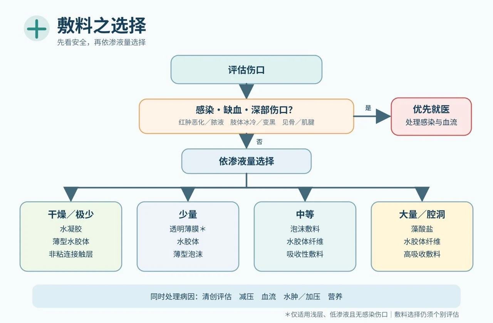

首页 / 敷料与湿敷换药
敷料使用原则与湿敷换药（专业版）
医护人员临床应用版 ・ 2026.08 精简版 ・ 依 WHS／IWGDF 2023／EPUAP-NPIAP-PPPIA 2019／EWMA 指南整理，详细出处见指南文献库
内核概念：敷料不是治疗慢性伤口的全部。先诊断病因，再处理伤口床，最后依渗液、感染、深度、疼痛与周边皮肤选择敷料。真正决定愈合的是血流、减压、控水肿、控感染与全身照护（IWGDF 2023；WHS 2023–2024）。
一、敷料选择前的评估
指南共同原则：敷料选择必须创建在标准化评估之上，而非直接套用产品（EPUAP/NPIAP/PPPIA 2019；IWGDF 2023）。
| 评估面向 | 对敷料选择的影响 |
|---|---|
| 病因（糖足／压力／动脉／静脉／放射／癌症） | 决定是否需卸压、加压、血流评估、切片或缓和照护 |
| 血流（脉搏、ABI/TBI、趾压） | 动脉缺血伤口不可贸然湿敷干黑焦痂或积极清创（WHS 动脉溃疡 2024） |
| 感染（红肿热痛、脓、发烧、培养） | 决定抗菌敷料、清创、抗生素或手术；未感染溃疡不用抗生素（IWGDF/IDSA 2023） |
| 渗液（量、性状、湿透速度） | 决定吸收力、换药频率与周边皮肤保护 |
| 深度与死腔（潜行、窦道、暴露肌腱骨头） | 决定是否填塞、NPWT 或进一步清创 |
| 疼痛／出血、周边皮肤 | 决定非沾黏或硅胶接触层、皮肤保护膜与低敏固定 |
二、床边口诀与选择流程

| 口诀 | 敷料方向 |
|---|---|
| 干要保湿 | 水凝胶、非沾黏；缺血干黑焦痂先评估血流 |
| 湿要吸收 | 泡棉、藻酸盐、亲水纤维、高吸收敷料 |
| 脏要清创 | 先决定清创方式（见清创决策）；敷料只是辅助 |
| 臭要控菌 | 抗菌敷料、活性碳；必要时全身治疗 |
| 深要填塞 | 藻酸盐条／亲水纤维条，填塞不可过紧、需完整取出 |
| 痛要不沾 | 硅胶接触层、非沾黏敷料、低黏性固定 |
| 皮肤要保护 | 皮肤保护膜、提升吸收力、低敏固定 |
| 缺血先看血流 | 先血流评估与血管转介（SVS/GVG 2019） |
1. 先排除严重缺血与严重感染——足冷、休息痛、干黑焦痂、坏疽或全身感染征象，先处理血流与感染。
↓
2. 判断渗液量——干燥需保湿；中大量需吸收；渗液突增需重估感染、水肿与静脉高压。
↓
3. 判断深度与死腔——深洞、潜行、窦道需轻度填塞并确认取出。
↓
4. 考量疼痛、出血与周边皮肤——非沾黏／硅胶接触层；浸润加强吸收与皮肤保护。
↓
5. 设置换药频率与追踪——2–4 周未改善即重新评估病因（WHS；IWGDF 2023）。
敷料类别的功能、适应症、限制与品牌对照，见敷料中心；交互选择见敷料选择器。实务采「接触层＋吸收层＋固定层」分层组合，不追求单一产品。
三、依病因的敷料方向（摘要）
| 伤口类型 | 敷料方向 | 病因处置优先（指南内核） |
|---|---|---|
| 糖尿病足 | 非沾黏、泡棉、亲水纤维、藻酸盐；深洞填塞 | 卸压与血流评估比敷料重要；排除骨髓炎（IWGDF 2023） |
| 静脉性溃疡 | 泡棉、高吸收、藻酸盐、亲水纤维 | 压迫治疗是内核；加压前确认动脉灌流（WHS 2016；EWMA 2023） |
| 动脉性溃疡 | 干黑焦痂无感染→干燥保护；少渗液→非沾黏 | 血流优先；不可乱清创缺血性焦痂（WHS 2024） |
| 压力性损伤 | 硅胶泡棉、藻酸盐、亲水纤维，必要时 NPWT | 减压是内核；依分期选敷料（EPUAP/NPIAP/PPPIA 2019，见对照表） |
| 放射性／癌症伤口 | 非沾黏、硅胶接触层、高吸收、活性碳 | 排除复发；癌症伤口以控渗液、控臭、止血、止痛为目标（EWMA 2025） |
四、换药频率与重新评估
| 情境 | 频率方向 |
|---|---|
| 感染、脓多、需密切观察 | 每日或更频繁 |
| 渗液多、易湿透 | 依湿透提早换＋提高吸收力 |
| 渗液中等且稳定 | 每 2–3 天 |
| 干净、渗液少／接近愈合 | 延长间隔，减少撕扯保护新生上皮 |
- 敷料外漏、松脱或污染时提早更换；疼痛突增、异味、红肿扩大或发烧→重新评估感染
- 周边皮肤浸润→增加吸收力、缩短间隔、皮肤保护膜
- 2–4 周未明显改善→重新评估血流、感染、压力、营养、恶性变化与敷料策略
- 抗菌敷料限期使用，1–2 周重新评估，不作常规预防（IWGDF/IDSA 2023）
五、常见错误（安全底线）
| 错误作法 | 建议修正 |
|---|---|
| 所有慢性伤口用同一种敷料 | 依病因与伤口床状态重新选择 |
| 只换药、不评估血流／糖足不卸压／静脉溃疡不控水肿 | 回到病因治疗：血流评估、off-loading、压迫与擡高 |
| 感染伤口只用银敷料 | 依感染层级处理，勿延误清创、培养与全身抗生素 |
| 深洞只盖表面／填塞过紧 | 适度松填、确认取出、追踪深度 |
| 缺血干黑焦痂乱湿敷或清创 | 先评估血流，必要时血管转介 |
| 久不愈合仍不切片 | 外观不典型或边缘隆起易出血时考虑切片 |
安全底线：不要让敷料掩盖恶化信号。伤口变大、变深、变臭、疼痛加剧、颜色变黑或全身状况恶化，应立即重新评估。每一次换药都是一次重新评估。
六、换药技术：湿敷换药（Wet Gauze Dressing）于需清创伤口之使用原则
内核结论：湿润纱布可短期用于软化腐肉、暂时覆盖及辅助自溶性清创；不应把纱布干燥后硬撕的 wet-to-dry 当作慢性伤口的常规清创方式（Wodash 2013；WHS 2023）。
1. 先分清楚两种作法
| 作法 | 主要目的 | 临床评价 |
|---|---|---|
| 湿润纱布／湿对湿 Moist gauze / wet-to-moist | 维持湿润、软化腐肉、辅助自溶性清创 | 可在适当血流与明确目标下短期使用；取下时应保持湿润，避免伤害肉芽。 |
| 湿到干 Wet-to-dry | 纱布干燥后撕除，形成非选择性机械清创 | 一般不建议常规使用；可能同时移除坏死组织、健康肉芽及新生上皮。 |
2. 清创前的三项必要判断
(1) 伤口是否具有愈合条件：先评估组织灌流（尤其足部、足跟与下肢伤口）；必要时 ABI、TBI、趾压或血管影像。血流足够、有愈合可能，且坏死组织阻碍愈合或感染控制时，才考虑积极清创。
重要禁忌：严重缺血、尚未血管重建、干性坏疽，或缺血性足趾／足跟上的干燥、完整、无感染征象之稳定焦痂——原则上保持干燥、保护并先做血管评估，不以湿敷软化或任意清创。
(2) 需要移除的是哪一种组织：薄层松散腐肉→可短期湿润软化；厚黏附坏死→单靠湿纱布不足，评估锐利／外科／酵素清创；健康肉芽／新生上皮→避免 wet-to-dry，改用不沾黏敷料；脓疡或深部感染→湿敷不能取代切开引流与抗感染治疗；缺血性干焦痂→保持干燥先处理血流。
(3) 清创目标是否明确：软化移除松散腐肉、降低细菌与生物膜负荷、创建肉芽生长环境、呈现真正伤口深度。
3. 操作重点
- 评估疼痛、血流、感染、出血风险、深度及暴露组织；必要时先止痛
- 0.9% 无菌生理食盐水低压冲洗；移除松散腐肉，不强拉黏附组织
- 纱布拧至湿润但不滴水；轻柔覆盖，腔洞松散填放——不塞紧、不留碎片、不盲目填入看不到底的窦道
- 外加吸收敷料并保护周围皮肤；在纱布完全干燥前更换，已黏住先浸润再移除
- 每次记录组织比例、渗液、气味、疼痛、尺寸与周围皮肤
4. 换药频率与停用时机
| 临床状况 | 建议原则 |
|---|---|
| 少量渗液且可维持湿润 | 通常每日 1 次 |
| 中量渗液或需密切观察 | 每日 1–2 次 |
| 大量渗液、污染或感染监测 | 每日 2–3 次；频繁饱和应改高吸收敷料 |
| 干燥、饱和、渗漏、脱落或粪尿污染 | 立即更换 |
| 每日须换 3–4 次才不干或不漏 | 湿纱布不适合长期使用，重新选择敷料 |
停用或转换时机：伤口床主要为健康肉芽或开始上皮化；腐肉 1–2 周未减少或尺寸无改善；换药反复疼痛出血或肉芽损伤；周围皮肤浸润发白糜烂；伤口扩大变深或深层组织暴露；出现缺血、蜂窝性组织炎、脓疡、骨髓炎或全身感染疑虑；渗液超过纱布吸收能力。
5. 临床决策口诀（四步骤）
先判断能不能清创（血流与愈合潜力）→ 再辨认要清除什么组织 → 选择最具选择性、创伤最低的方式 → 依肉芽、渗液与感染变化及时停用或转换敷料。
湿纱布是局部照护工具，不能取代减压、压迫治疗、血管重建、感染控制、营养及血糖管理。出现扩大红肿热痛、恶臭脓液、发烧、坏死快速扩大、捻发感、足部冰冷苍白或疼痛突然加剧，应立即接受医疗评估。
依据（详指南文献库）：IWGDF Guidelines 2023（DOI:10.1002/dmrr.3644 系列）；IWGDF/IDSA 感染指南 2023（DOI:10.1093/cid/ciad527）；Gould LJ, et al. WHS Pressure Ulcers 2023 update（WRR 2024, DOI:10.1111/wrr.13130）；Federman DG, et al. WHS Arterial Ulcers 2023 update（WRR 2024, DOI:10.1111/wrr.13204）；Marston W, et al. WHS Venous Ulcers（WRR 2016, DOI:10.1111/wrr.12394）；EPUAP/NPIAP/PPPIA International Guideline 2019；EWMA Lower Leg Ulcer 2023／Palliative 2025；Conte MS, et al. Global Vascular Guidelines（JVS 2019, DOI:10.1016/j.jvs.2019.02.016）；Wodash AJ 2013（wet-to-dry 证据）。
最后更新：2026-08-31 ・ 2026.08 精简版（依指南文献库学会指南整理）